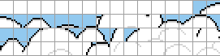
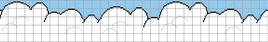

Displaying
Let's talk quickly about how to display stuff on-screen. This is one of the most complex parts of the Game Boy, but for now we will cover just the basics.
Overview
Let's quickly see how pixels are rendered to the screen. It's important that you grasp this at a surface level; we will see all of this in practice in the next lesson.
The Game Boy has a 4-color LCD, 144 pixels tall, 160 pixels wide. It's refreshed roughly 60 times per second; one refreshing period (basically the time between two consecutive redraws of the top-left pixel) is called a frame. If u gud at math, you will have figured out that a frame is roughly a 60th of a second.
During a frame, the LCD's pixels are refreshed, line by line. The concept is inherited from old CRT TVs, where an electron beam has to sweep across the entire screen. First, the beam traces a line, from left to right, then it moves back to the beginning of the next row, during a small time called horizontal blanking (HBlank). Then it repeats with the next line, and so on.
When the beam has drawn the last line, it moves back to the top of the screen, and waits a little bit until the next frame. This is called vertical blanking (VBlank).
Do you speak LCD?
The Game Boy doesn't use a CRT display (thank god), but it also presents these two concepts. How do we interface with that? Let's introduce address $FF44, the LY register (it's not the same "register" concept as a CPU register, but that's how we call it). This register indicates which scanline the LCD is currently drawing: 0-143, or if the LCD is in the VBlank period (144-153). You can read from LY, but not write to it.
; Wait until VBlank
.notVBlanking
ldh a, [rLY] ; Read the LCD's drawing status
cp 144
jr c, .notVBlanking ; The LCD is VBlanking between LY 144 and 153
We can also read the status of the LCD using address $FF41, the STAT register. More specifically, the lower two bits. There are four modes:
- Mode 0
- HBlank
- Mode 1
- VBlank
- Mode 2
- OAM search
- Mode 3
- Rendering
We will explain the four modes below.
VRAM
The Video RAM (VRAM) is the section of memory between $8000 and $9FFF. The bulk of the graphics data is stored there. But before we talk about how data is stored there, we need to clear something up: accessing VRAM is delicate. Why? Well, as you know, the CPU (Central Processing Unit) is a chip that processes instructions. But the Game Boy also possesses a PPU (Pixel Processing Unit), which can be considered a very primitive GPU (you can't even program it, just set some registers that it uses as rendering parameters. No shaders! Whee.)
The problem lies in that the PPU accesses VRAM to perform rendering, and the CPU cannot access VRAM while the PPU is accessing it. You can consider the VRAM "locked" by the PPU. What does it mean for the CPU? Reading from VRAM yields $FF, and writes have no effect. So we need to be careful! But how do we do that? We will turn the LCD off, which puts the PPU to sleep and grants us (the CPU) unlimited access to VRAM. Cool or what? The problem is that while the LCD is turned off, all pixels are fully white.
There exists a solution to access VRAM safely with the LCD turned on, but for the sake of simplicity I'm omitting it for now. Now, let's focus on how to store the data to be drawn.
Picture this
Okay, pixels. However, we won't be dealing with individual pixels. That would cause problems, basically room and processing power. So how does it work? Using tiles. Tiles are units of 8x8 pixels, which are then "assembled" on what's called a tile map / tilemap. Here's an example of tiles (please note that the blank tiles at the beginning are simply uninitialized):

and how they're assembled on the tilemap:

You can notice that this cuts down on the repetition, which is the primary pro of tilemapping.
Please note that these are Game Boy Color graphics, and thus use more colors than available on the Game Boy. For the sake of simplicity, GBC support will be omitted from the Hello World.
Each pixel can be one of four colours; since 4 = 2^2, this requires 2 bits per pixel (bpp). Thus, we have 8 * 8 pixels * 2 bpp / 8 bits-per-byte = 16 bytes per tile. The Game Boy stores tiles between $8000 and $97FF, which leaves space for 384 tiles, which can be considered in three "blocks" of 128 tiles.
The Game Boy then stores two tile maps of 32 * 32 tiles (256 * 256 pixels), one at $9800-$9BFF, one at $9C00-$9FFF. But, alert readers will have noticed that 256x256 pixels is roughly 1.5x1.5 times larger than the 144x160 pixel screen. That's simply enough because we can scroll the screen around the tilemap! Meet SCY and SCX ($FF42 and $FF43, respectively). These registers specify the coordinates of the top-left corner of the screen, relative to the tilemap. Thus, increasing SCY appears to scroll the display up (because the "focus" moves downwards), and decreasing SCX scrolls right. But what happens when we're reaching the edge of the tilemap? Helpfully, it wraps around!
And one final thing: each pixel of a tile doesn't have an intrinsic color -- colors are applied using a palette, specified by the background palette, or BGP, register. The formatting of the palette is a little weird, so bear with me for a second. The BGP register is split into 4 groups of 2 bytes each. The lower 2 bits specify which color is color #0, then color #1, etc. (Remember that each pixel is encoded using 2 bits, which when combined yields one of 0 through 3, which is simply the color index to use in the palette.)
BGP: %33 22 11 00
If the color is set to %00, then that's white. %01 is light gray, %10 is dark gray, and %11 is fully dark. So, the palette %11 11 11 11 has the screen fully black, and %11 10 01 00 maps every color (but you could shuffle colors around with %10 00 01 11, for example.)
Here's a recap of what needs to be done to display stuff:
- Copy tiles to VRAM
- Write to tilemap
- Set scrolling (SCY, SCX)
- Set palette
Doesn't sound simple? Well, that's what we're going to do next! Don't worry.